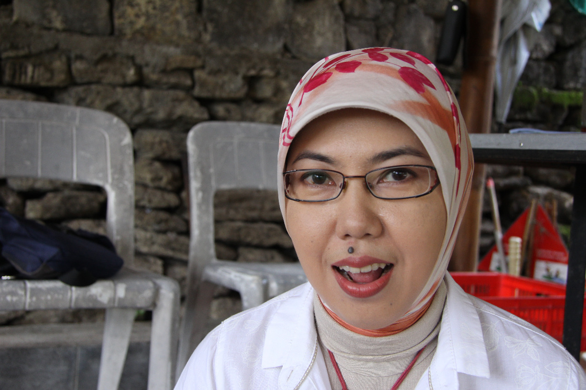
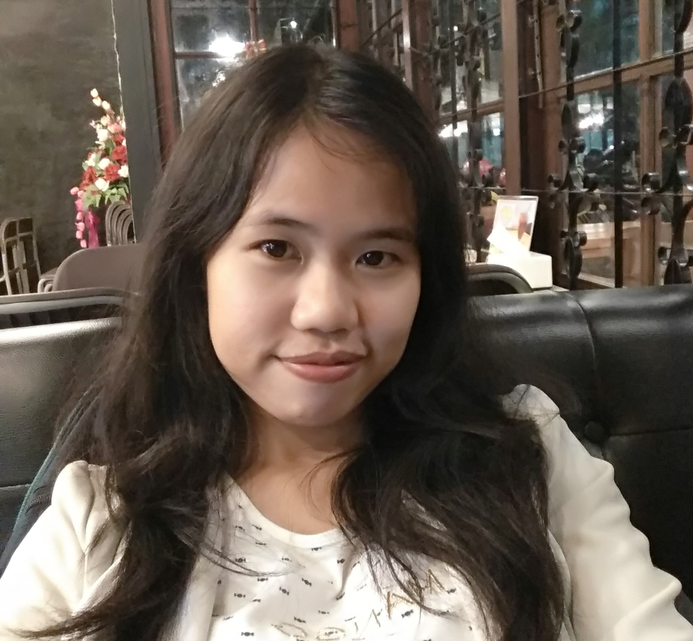
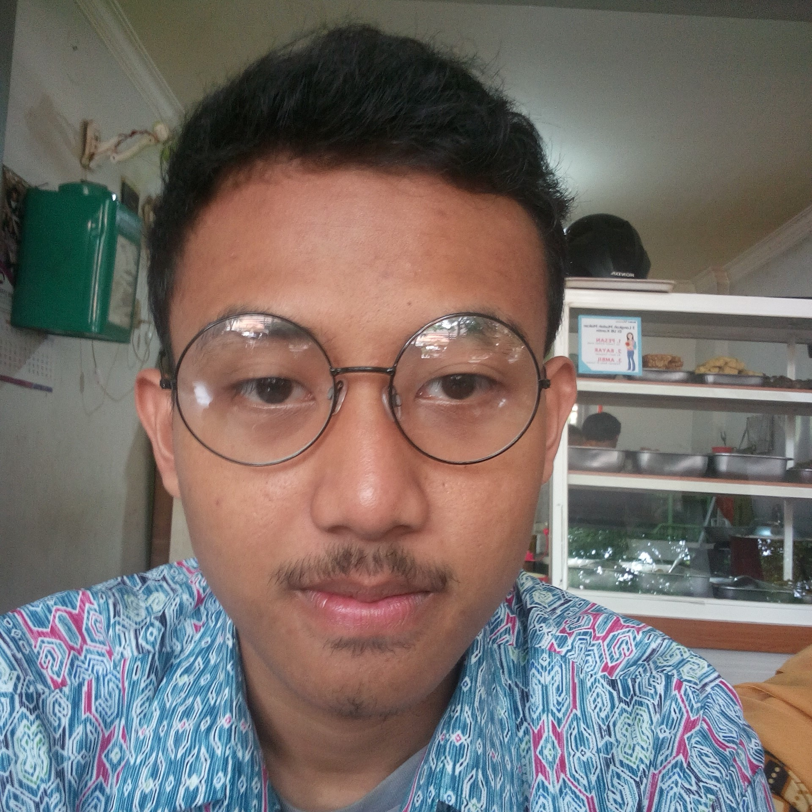
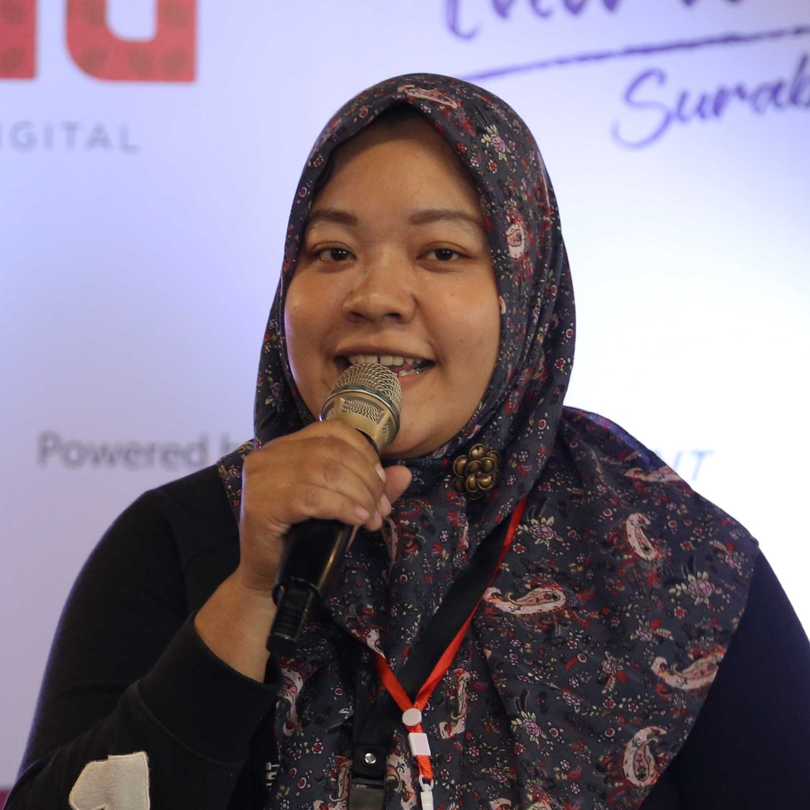

Pengumuman Resmi: Hasil Akhir Training of Trainers Creative Commons Indonesia


Training of Trainers Creative Commons Indonesia (CCID-ToT) adalah program peningkatan jumlah pelatih tentang lisensi Creative Commons (lisensi CC) di Indonesia oleh Creative Commons Indonesia (CCID). Para peserta diajak untuk mempelajari kemudian mendemonstrasikan hal yang dipelajari melalui 3 misi yang dilaksanakan sejak tanggal 7 Februari 2018 secara bertahap hingga 14 Oktober 2018. Dari 653 pendaftar di misi 1, 9 peserta berhasil menyelesaikan tugasnya dengan baik di bawah panduan tim proyek Sertifikasi Perwakilan Creative Commons Indonesia (SPCCID). CCID memberikan penghargaan kepada 9 peserta berupa beasiswa Sertifikat CC yang akan mereka jalani pada bulan Januari 2019-Maret 2019 dan 3 peserta dengan nilai terbaik mendapatkan beasiswa perjalanan ke CC Global Summit 2019 di Lisbon, Portugal.
Berikut adalah 9 peserta yang nantinya akan menjadi ahli tentang lisensi CC di tempat mereka berdomisili dan beraktivitas, serta menjadi bagian dari keluarga kecil kami di Creative Commons Indonesia.
Peserta Penerima Beasiswa Sertifikat CC dan Beasiswa Perjalanan CC Global Summit 2019:
Wahyu Setioko (Lombok, NTB)

Wahyu adalah seorang aktivis bidang pendidikan yang berdomisili di Lombok Tengah.
Lihat dokumentasi tugas lapangan Koko di tautan ini.
Kesan dan pesan:
“CCID-ToT itu semacam paket komplet, Misi 1 menambah pengetahuan, Misi 2 mengasah kreativitas, Misi 3 memperluas jejaring sambil menebar manfaat hak cipta dan lisensi Creative Commons sebagai medianya. Seru!”
Proyeksi:
“Saya berencana untuk menyebarluaskan pengetahuan tentang lisensi Creative Commons kepada lingkar pertemanan terdekat di lingkungan sekitar, khususnya pada bidang pendidikan.”
Rencana terkait keberangkatan ke CC Global Summit 2019:
“Belajar lebih banyak lagi tentang seluk beluk Creative Commons, termasuk lisensinya, komunitasnya, dan inisiatif-inisiatif lainnya dari CC di berbagai negara. Mungkin ada yang bisa diadaptasi ke dalam konteks Indonesia. Selain itu, pastinya menambah jejaring dengan pegiat lisensi CC dan Open Education di level internasional.”
Siti Nurleily Marliana (Yogyakarta)

Leily adalah seorang pengelola jurnal di Universitas Gadjah Mada.
Lihat dokumentasi tugas lapangan Leily di tautan ini.
Kesan dan pesan:
“Saya menilai, CCID-ToT berhasil memberikan variasi tantangan untuk pesertanya, sehingga dalam tiap misi mereka dapat menunjukkan kekuatan mereka sesuai dengan latar belakang masing-masing. Beberapa peserta akan lebih baik dari peserta lainnya dalam tugas tertentu, dan hal ini merupakan hal yang baik untuk memberikan keragaman dalam CC Chapter Indonesia. Saya juga ingin secara khusus menyoroti pengalaman saya dalam bekerja sama dengan Hilman dan Fitri yang semuanya sangat positif. Tidak ada pertanyaan saya yang tidak terjawab, dan saya percaya bahwa bahkan jika saya gagal menerima sertifikasi, saya akan tetap menjadi orang yang lebih berpengetahuan dengan ikut serta dalam pelatihan ini.”
Proyeksi:
“Terlepas dari kenyataan bahwa banyak jurnal ilmiah di Indonesia berharap atau telah berhasil masuk ke dalam DOAJ, berdasarkan pengalaman saya, sangat sedikit dari mereka yang benar-benar memahami lisensi Creative Commons yang mereka gunakan. Dengan menggabungkan pengalaman saya dalam mengelola jurnal ilmiah dengan sertifikasi CC, saya berharap bahwa saya akan dapat memperbaiki kurangnya pemahaman tersebut. Saya juga berencana untuk melanjutkan upaya membentuk tim konsultasi lisensi di universitas saya untuk mempromosikan dan menerapkan penggunaan lisensi CC dalam berbagai macam karya yang dihasilkannya. Lebih lanjut lagi, tim tersebut akan terlibat dalam upaya meningkatkan pemahaman atas manfaat dari konten terbuka.”
Rencana terkait keberangkatan ke CC Global Summit 2019:
“Jika terpilih untuk menghadiri CC Global Summit, saya berencana untuk menggali pengetahuan dari para peserta Summit dari negara lain untuk mempelajari lebih lanjut tentang upaya mereka dalam mengkomunikasikan pentingnya dan nilai dari lisensi terbuka. Karena latar belakang saya sebagai akademisi dan kaitan saya dalam penerbitan akademik, saya terutama berharap untuk bertemu dan berdiskusi dengan orang-orang dengan minat sama untuk membuat penerbitan akademik lebih terbuka. Saya ingin mempelajari apa yang telah mereka lakukan di institusi mereka masing-masing, sehingga saya dapat melihat apa yang dapat saya lakukan untuk membuat universitas saya sendiri (dan akhirnya universitas lain, juga) lebih terbuka.”
Bhredipta Socarana Cresti (Jakarta)

Bhredipta Socarana adalah seorang advokat dan anggota dari organisasi Social Corporate Law Society Indonesia, perkumpulan praktisi hukum yang memberikan bantuan hukum secara pro bono baik kepada individu maupun kelompok seperti perusahaan di bidang sosial.
Lihat dokumentasi tugas lapangan Bhredipta di tautan ini.
Kesan dan pesan:
“Menantang dan memberikan banyak informasi terkait penggunaan lisensi Creative Commons.”
Proyeksi:
“Meningkatkan kegiatan penyebaran pemahaman terhadap lisensi Creative Commons serta mengaplikasikan pemahaman tentang lisensi Creative Commons dalam praktek hukum yang saya lakukan saat ini.”
Rencana terkait keberangkatan ke CC Global Summit 2019:
“Meningkatkan pengetahuan terkait lisensi Creative Commons, khususnya terhadap isu isu perlindungan budaya dan benda benda bersejarah serta menambah jejaring.”
Peserta Penerima Beasiswa Sertifikat CC:
Harsa Wayu Ramadhan (Lampung)

Harsa adalah seorang konsultan hukum di salah satu firma hukum swasta Lampung.
Lihat dokumentasi tugas lapangan Harsa di tautan ini.
Kesan dan pesan:
“Sejak 2013, saya memiliki antusiasme terhadap gerakan keterbukaan akses (free culture) yang dimotori oleh Creative Commons (CC). Saya senang bisa terlibat secara langsung dan lebih dalam di gerakan ini. Ringkasnya, kesan dan pesan selama misi 1, 2, dan 3 program ToT CCID dapat dideskripsikan dalan tiga kata: inklusif, fleksibel, dan interaktif. Inklusif karena hak cipta bukan urusan legal semata, tapi memang harus melibatkan disiplin lain, bila perlu dengan pendekatan interdipliner. Fleksibel, meskipun ada tenggat, peserta diberikan fleksibilitas yang cukup dalam menjalani misi melalui diskresi-diskresi dari pengarah atau koordinator program di grup telegram dan whatsapp untuk mendorong diselesaikannya misi oleh tiap peserta. Interaktif, karena penerapan teknologi seperti pesan instan dan lain-lain memudahkan proses interaksi dalam penyelesaian misi walaupun kami terpisah secara letak geografis.”
Proyeksi:
“Saya harap melalui program Sertifikat CC saya dapat berkontribusi dengan mengedukasi, mengadvokasi, dan (apabila diperlukan) mengorganisir publik Indonesia, khususnya di tempat saya berdomisili tentang pentingnya keterbukaan akses ciptaan melalui penerapan lisensi CC.”
Maura Aviolis (Pontianak)

Maura adalah seorang pegiat literasi dan pendidik yang berdomisili di Pontianak.
Lihat dokumentasi tugas lapangan Maura di tautan ini.
Kesan dan pesan:
“Kegiatan ini adalah hal yang baru bagi saya dan segala pengetahuan yang telah saya pelajari memberikan manfaat untuk saya dan lingkungan sekitar dengan adanya kesempatan untuk menyebarkannya. Panitia program ini sangat sabar membimbing peserta selama kegiatan berlangsung. Saya harap program ini dapat menjadi agenda rutin, terutama sekarang sudah ada “alumni” dari program ini yang dapat membantu dan melibatkan diri dalam penyelenggaraan CCID-ToT selanjutnya di tiap daerah.”
Proyeksi:
“Turut serta dalam program Sertifikat CC untuk menambah wawasan mengenai lisensi Creative Commons.”
Yosefin Candra Pranadewi (Jakarta)

Yosefin adalah salah seorang alumni Program Magister Sekolah Tinggi Manajemen dan Akuntansi PPM yang kini juga aktif sebagai konsultan di PPM Manajemen.
Lihat dokumentasi tugas lapangan Yosefin di tautan ini.
Kesan dan pesan:
“Penugasan dengan konsep Misi menjadi menarik karena tantangan yang diberikan sifatnya berjenjang, secara sadar atau tidak konsep ini membuat peserta perlahan-lahan mengulik lebih dalam tentang Creative Commons dan prinsip-prinsip Lisensi yang digunakan. Terlepas dari kompetisi yang sebenarnya, saya pribadi merasa lebih puas atas pembelajaran saat mengerjakan ketiga misi tersebut. Refleksi terhadap keseharian dan kepekaan terhadap kebebasan serta batasan hak cipta merupakan poin utama yang saya dapat saat mengerjakan ketiga misi tersebut, diskusi aktif dengan pihak Creative Commons Indonesia menjadi bonus tambahan dalam menjawab rasa penasaran akan beberapa hal dan isu yang dihadapi.”
Proyeksi:
“Rencananya saya akan membagikan informasi dan pengetahuan yang saya peroleh di lingkungan saya maupun melalui kanal media sosial yang secara aktif saya gunakan dalam keseharian. Serta terbuka untuk terlibat dalam forum diskusi atau kajian untuk mengembangkan dan menyebarluaskan pengetahuan mengenai Lisensi Creative Commons (baik dalam bentuk tatap muka maupun daring).”
Muhammad Ridwan (Malang)

Ridwan adalah mahasiswa tingkat akhir di Fakultas Hukum Universitas Brawijaya.
Lihat dokumentasi tugas lapangan Ridwan di tautan ini.
Kesan dan pesan:
“Program ini sangat seru dan mengedukasi. Saya yang sebelumnya tidak begitu tahu paham mengenai lisensi Creative Commons, sekarang jadi lebih mengerti.”
Proyeksi:
“Saya ingin membagikan pengetahuan ini ke banyak orang, karena saya rasa masih banyak orang-orang di ranah pendidikan tinggi yang belum mengeti tentang cara kerja lisensi ini, juga cara kerja hak cipta secara umum.”
Florens Debora Patricia (Surabaya)

Florens adalah salah seorang tenaga pengajar di Institut Bisnis dan Informatika Stikom Surabaya.
Lihat dokumentasi tugas lapangan Florens di tautan ini.
Kesan dan pesan:
“Sangat bersemangat!”
Proyeksi:
“Membagikan pengalaman dan ilmu yang saya dapat kepada rekan-rekan seprofesi, lalu kepada mahasiswa Desain Komunikasi Visual (DKV) di tempat saya mengajar serta masyarakat luas.”
Risky Amelia Ramadhani (Surabaya)

Kiky adalah salah seorang peneliti bidang pemasaran yang berdomisili di Surabaya.
Lihat dokumentasi tugas lapangan Kiky di tautan ini.
Kesan dan pesan:
“Hebat, program ini berhasil dilaksanakan dengan baik”.
Proyeksi:
“Tetap melaju ke depan dan melanjutkan apa yang sudah dilaksanakan sebelumya.”
CCID akan berupaya untuk mendorong dan melibatkan peserta dalam kegiatan-kegiatan yang berkaitan dengan pemajuan lisensi terbuka, khususnya lisensi terbuka di Creative Commons. Dan, tidak menutup kemungkinan dibukanya kembali program serupa di kesempatan yang lain berdasarkan saran dan/atau rekomendasi yang kami terima dari luar sebagai bekal untuk membuat konten program menjadi lebih baik dan semakin berdampak.
Kami mengucapkan terima kasih sebesar-besarnya kepada seluruh pihak yang telah mendukung berjalannya program ini dari awal hingga akhir, khususnya untuk Ford Foundation, Wikimedia Indonesia, Creative Commons HQ, para pendahulu di Creative Commons Indonesia atas segala bimbingannya (Ari Juliano Gema, Ivan Lanin, Siska Doviana, dan Alifia Qonita Sudharto), Relawan Jurnal Indonesia, Universitas Pattimura, C20 Library & Collabtive, ALSA LC Fakultas Hukum Universitas Syiah Kuala, ALSA LC Fakultas Hukum Universitas Andalas, Jagongan Media Rakyat, COMBINE RI, UNDAS.Co, Jenggala Community Hub, Kampus ISBI Tanah Papua, Komunitas Hukum Bisnis Fakultas Hukum Universitas Brawijaya, Institut Bisnis dan Informatika Stikom Surabaya, Fakultas Hukum Universitas Negeri Lampung, Badan Penerbitan dan Publikasi Universitas Gadjah Mada, PPM Manajemen, Mata Garuda NTB, PGRI Provinsi NTB, Pustaka Rumah Aloy, Social Corporate Law Society Indonesia, KORIDOR Coworking Space, dan semua pihak yang tidak dapat kami sebutkan satu per satu atas kontribusi langsung maupun tidak langsung dalam pelaksanaan program ini.
Ingat, ini bukan lah penutup, dan bukan pula sebuah akhiran, ini adalah salah satu dari sekian banyak langkah baru dalam pemajuan lisensi terbuka di Indonesia!
Pokoknya Creative Commons! (Staf proyek Sertifikasi Perwakilan Creative Commons Indonesia).